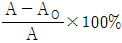
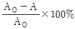
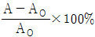
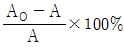

방사선비파괴검사기능사 (2002-01-27 기출문제)
1과목: 방사선투과시험법
1. 모세관 현상의 원리를 이용하여 균열을 검사하는 비파괴검사법은?
- 침투탐상시험
- 자분탐상시험
- 방사선투과시험
- 초음파탐상시험
(정답률: 알수없음)

2. 자분탐상시험법에 대한 설명으로 틀린 것은?
- 자분탐상시험은 강자성체에 적용한다.
- 제한적이지만 표면에 드러나지 않는 불연속도 검출할 수 있다.
- 강자성체 내부 균열이나 표면 균열의 검출감도가 높다.
- 시험체가 매우 큰 경우는 여러 번으로 나누어 검사할 수 있다.
(정답률: 알수없음)
3. 다음 중 침투탐상시험에서 불연속 검사는 언제 하는가?
- 세척후
- 침투액 적용후
- 현상제 적용전
- 현상제 적용후
(정답률: 80%)
4. 다음 중 X선과 γ선에 대한 설명으로 틀린 것은?
- X선과 γ선은 무게나 질량이 없는 에너지 파형이다.
- 오감(五感)으로 느낄 수 있는 것이 아니다.
- 방사성 동위원소는 종류별로 고유의 일정한 에너지를 갖는다.
- X선의 강도는 Tube에 적용되는 전압(kV)에 의해 결정된다.
(정답률: 알수없음)
5. 다음 중 시험품의 양면이 서로 평행해야만 최대의 효과를 얻을 수 있는 비파괴검사법은?
- 방사선투과시험의 형광투시법
- 자분탐상시험의 선형자화법
- 초음파탐상시험의 공진법
- 침투탐상시험의 수세성 형광침투법
(정답률: 80%)
6. 방사선 발생장치에서 필라멘트는 점화되어 있으나 전류계의 바늘 움직임이 매우 불안전한 원인은?
- 양극 회로의 접촉불량
- 고전압 변압기의 단선
- 관전류 회로의 단선
- 진공도 저하
(정답률: 알수없음)
7. X선이 방사선투과시험에 사용될 수 있는 주된 성질은?
- 광전자를 방출하는 성질
- 기체를 전리시키는 성질
- 유제를 감광시키는 성질
- 검사체를 방사화시키는 성질
(정답률: 59%)
8. X선 발생장치에 비하여 γ선에 의한 투과사진 촬영시의 장점이 아닌 것은?
- 조사를 360° 또는 일정방향으로 조절할 수 있다.
- 동일한 에너지 범위일 경우 X선 보다 저렴하다.
- 작업시 이동이 용이하며 전원이 필요없다.
- 에너지량을 손쉽게 조절할 수 있다.
(정답률: 알수없음)
9. 방사선투과사진의 선명도(Definition)에 직접적으로 영향을 주는 것이 아닌 것은?
- 초점의 크기
- 계조계의 크기
- 스크린 재질
- 방사선질
(정답률: 알수없음)
10. X선 빔(beam)의 투과력은 무엇에 의해 결정되는가?
- 관전압 또는 파장
- 노출시간
- 관전류
- 선원과 필름간 거리
(정답률: 60%)
11. X선 발생장치의 관을 고진공 상태로 설계 제작하는 이유로 맞지 않는 것은?
- 고속전자의 에너지 손실 방지
- 필라멘트의 산화 및 연소를 방지
- 전극간의 전기적 절연
- 열 발생의 방지
(정답률: 알수없음)
12. 서로 다른 2개의 X선 발생장치에서 관전류, 관전압 및 측정 위치가 동일하여도 선질 및 선량율이 다르게 되는 원인으로 볼 수 없는 것은?
- 관전압 발생 방법
- X선 관내에서의 흡수차이
- 관전압의 측정오차
- 측정장치의 오차
(정답률: 알수없음)
13. 방사선투과시험용 γ선원을 선정할 때 고려하여야 할 사항이 아닌 것은?
- 시험체의 두께와 재질
- γ선원의 에너지
- γ선원의 크기
- 선원의 제조회사 및 제조자
(정답률: 알수없음)
14. X선 발생장치의 방사창(Tube Window)에 설치하는 필터의 사용 목적이 아닌 것은?
- 산란선의 발생을 감소한다.
- X선속의 연(soft)성분을 흡수한다.
- 사진콘트라스트를 감소시킨다.
- X선속을 필요한 범위로 제한한다.
(정답률: 24%)
15. X선 발생장치의 고전압회로의 결선방식이 아닌 것은?
- 자기정류 방식
- 역전압 저감회로 방식
- 반파정류 방식
- 빌라드 결선 방식
(정답률: 알수없음)
16. 6mm 두께 알루미늄판 용접부의 방사선투과시험을 실시할 때 납증감지는 어떻게 하는가?
- 필름 전면(前面)에만 사용한다.
- 필름 양면(兩面)에 다 사용해야 한다.
- 사용해서는 안된다.
- 사용할 수도 있고 안할 수도 있다.
(정답률: 알수없음)
17. 방사선투과시험시 초점과 피사체간의 거리를 좁히면 어떻게 되는가?
- 기하학적 선명도가 나빠진다.
- 기하학적 불선명도가 적어진다.
- 기하학적 관용도가 좋아진다.
- 기하학적 관용도가 나빠진다.
(정답률: 알수없음)
18. 다음 중 방사선투과시험에서 노출시간을 정할 때의 참고 자료는?
- 필름특성곡선
- 검량곡선
- 붕괴곡선
- 노출도표
(정답률: 50%)
19. 방사선투과검사시 68°F 이상의 물에서 필름의 세척을 오래하면 어떤 현상이 생기는가?
- 제라틴의 결정화
- 제라틴의 연질화
- 노란색의 얼룩발생
- 선명도의 약화
(정답률: 알수없음)
20. 맞대기 용접부의 내면 기공을 비파괴검사로 검출하는데 가장 적합한 방법은?
- 침투탐상시험법(PT)
- 와전류탐상시험법(ET)
- 누설검사법(LT)
- 방사선투과시험법(RT)
(정답률: 알수없음)
2과목: 방사선안전관리 관련규격
21. X선 발생장치를 사용하여 방사선투과시험시 X선 회절에 의해 Mottling 현상이 일어난다. 이러한 현상이 일어나는 경우에 대한 설명 중 틀린 것은?
- 오스테나이트계 스테인리스중 부식 및 열저항 재료의 경우
- 입상성이 조대하고 박판인 경우
- 니켈 합금 재료의 경우
- 인코넬중 입상성이 미세한 경우
(정답률: 알수없음)
22. 방사선투과시험시 투과도계의 역할은?
- 필름의 밀도 측정
- 부위의 불연속부 크기 측정
- 필름 콘트라스트의 양 측정
- 방사선투과사진의 상질 측정
(정답률: 알수없음)
23. 어떤 선원의 현재 방사능이 10Ci일 때 14년전의 방사능은 약 얼마인가? (단, 이 선원의 반감기는 5.3년이다.)
- 0.2Ci
- 62.4mCi
- 62.4Ci
- 0.2mCi
(정답률: 알수없음)
24. 방사선투과사진의 인공결함 중 현상처리전에 이미 발생되는 인공결함이 아닌 것은?
- 반점(spotting)
- 필름 스크래치(scratch)
- 압흔(pressure mark)
- 흐림(Fog)
(정답률: 알수없음)
25. 와전류탐상검사에서 와전류의 침투깊이를 설명한 내용 중 잘못된 것은?
- 주파수가 높을수록 침투깊이가 얕다.
- 투자율이 높을수록 침투깊이가 얕다.
- 전도도가 높을수록 침투깊이가 얕다.
- 재질의 밀도가 높을수록 침투깊이가 얕다.
(정답률: 알수없음)
26. 방사선 피폭에 의한 장해가 아닌 것은?
- 백혈병
- 탈모
- 위산과다
- 백내장
(정답률: 알수없음)
27. 방사선 조사량에 따른 육체적 영향을 설명한 것중 잘못된것은? (단, 방사선 조사량은 rem/h일 때)
- 0 ~ 25 : 증세 없음
- 50 ~ 100 : 피로권태, 구토, 부분탈모
- 100 ~ 250 : 구토, 식욕부진
- 250 ~ 500 : 100% 사망
(정답률: 알수없음)
28. Ir-192 10Ci선원으로 부터 5m 지점에서의 시간당 선량율은? (단, Ir-192 1Ci당 1m거리에서 1시간당 선량율은 0.5R/h로 간주한다.)
- 무시할 정도로 적다
- 0.2 R/h
- 1 R/h
- 5 R/h
(정답률: 알수없음)
29. 방사선투과검사에 주로 사용되는 동위원소에 대한 납의 반가층을 제시한 수치중 틀린 것은?
- Ir-192 : 약5.1mm
- Co-60 : 약25.4mm
- Cs-137 : 약6.1mm
- Ra-226 : 약16.5mm
(정답률: 알수없음)
30. 다음 중 개인 피폭선량 측정용 만으로 사용하는 측정기가 아닌 것은?
- 서베이 메터
- 필름 뱃지
- 티엘디(TLD)
- 포켓 도시메터
(정답률: 알수없음)
31. 외부 방사선피폭 방어의 3가지 방법에 속하지 않는 것은?
- 방사선 강도는 거리에 정비례하여 증가하는 방법을 이용한다.
- 방사선이 피폭되는 양은 시간에 정비례하여 증가하므로 피폭시간을 줄인다.
- 방사선은 거리의 제곱에 반비례하여 감소하는 방법을 이용한다.
- 방사선은 매질내에서 지수함수적으로 감소하는 법칙을 이용한다.
(정답률: 알수없음)
32. 다음 중 방사선 차폐계산시 고려대상이 되지 않는 것은?
- 작업량(work load)
- 점유율(occupancy factor)
- 사용율(use factor)
- 방사평형(radioactive equilibrium)
(정답률: 알수없음)
33. 방사성동위원소 규정상 방사선 피폭에서 제외되는 것은?
- 감마선
- 고속전자
- 중성자
- 진료로 받는 X-선
(정답률: 알수없음)
34. 방사선투과시험중 방사선 종사자 이외의 자가 인접하여 상근하고 있을 수 있다. 그 장소에 방사선 작업중 계속 상주함으로써 그 사람은 월 0.2rem의 방사선에 전신 균일 피폭되었다. 이 때 그 사람은 그 장소에 몇 개월 이상 근무해서는 안되는가? (단, 방사선 종사자 이외의 성인에 대한 전신 균일조사시 년간 허용 피폭선량은 1.5rem 이라고 간주한다.)
- 7.5개월
- 0.14개월
- 1년내내 근무해도 상관없다.
- 그 곳에서 앞으로 전혀 근무해서는 안된다.
(정답률: 알수없음)
35. KS 규격에서 강용접부 방사선투과사진의 등급분류에 포함되지 않은 결함은?
- 블로홀
- 용입 불량
- 갈라짐
- 언더컷
(정답률: 알수없음)
36. KS D 0242에 의한 알루미늄 용접부의 방사선투과시험 방법에서 모재의 두께 및 재료 두께를 실제로 측정하지 않는 경우 덧살없는 용접부의 두께가 10㎜미만일 때 계조계의 형으로 옳은 것은?
- D 1
- D 2
- E 2
- E 3
(정답률: 70%)
37. KS D 0241에 규정된 알루미늄주물의 방사선투과사진에서 결함이 기포일 때 시험부의 두께에 따라 계산하지 않아도 되는 결함의 최대 크기가 잘못된 것은?
- 시험부 두께가 6㎜ 이하일 때 : 0.3㎜
- 시험부 두께가 6 초과 25㎜일 때 : 0.6㎜
- 시험부 두께가 25 초과 80㎜일 때 : 1.0㎜
- 시험부 두께가 80㎜ 이상일 때 : 3.0㎜
(정답률: 알수없음)
38. KS D 0227에 따라 주강품의 방사선투과시험시 사용되는 투과도계에 대한 설명으로 잘못 설명된 것은? (단, 사용재료 두께의 범위는 A급으로 할 때)
- 재료두께가 16mm 이하일 때는 F02를 쓴다.
- 투과도계내의 철선 수는 5개이다.
- F04 투과도계의 철선 중심간 거리는 4 또는 5mm이다.
- F08 투과도계의 철선의 길이는 25, 40, 60mm이다.
(정답률: 알수없음)
39. KS D 0242에 의한 알루미늄 용접부 두께가 40mm 이상인 투과사진 상에서 결함 점수로 계산하지 않는 블로홀의 크기는?
- 모재 두께의 1.5% 이하
- 모재 두께의 1.6% 이하
- 모재 두께의 1.8% 이하
- 모재 두께의 2.0% 이하
(정답률: 알수없음)
40. KS D 0227에서 주강품의 복합 필름을 2매 겹쳐서 관찰하는 경우의 각각의 최저농도와 2매 겹친 최고 농도는 얼마인가?
- 최저는 0.3, 최고는 3.5
- 최저는 0.5, 최고는 3.5
- 최저는 0.8, 최고는 3.5
- 최저는 1.0, 최고는 3.5
(정답률: 알수없음)
3과목: 금속재료일반 및 용접 일반
41. KS D 0227 촬영배치에서 투과사진의 상질 B급인 경우, 재료 두께 38mm, 선원 치수 3mm일 때 방사선원과 투과도계 사이의 거리는? (단, 시험체와 필름 사이의 거리는 2mm)
- 114mm
- 116mm
- 150mm
- 159mm
(정답률: 알수없음)
42. 동소변태를 옳게 설명한 것은?
- 고체내에서 결정격자의 변화
- 고체내에서 전자격자의 활동
- 액체내에서 결정격자의 변화
- 기체내에서 결정격자의 변화
(정답률: 알수없음)
43. 소성가공이 아닌 것은?
- 단조
- 인발
- 주조
- 압연
(정답률: 알수없음)
44. 금속의 소성변형이 일어나는 원인과 관련이 깊은 것은?
- 비중
- 비열
- 경도
- 슬립
(정답률: 알수없음)
45. 시험편 파괴되기 직전의 단면적을 A, 원단면적을 AO라 할때 단면 수축율의 산출공식은?




(정답률: 알수없음)
46. 금속 시료(試料)의 연마에서 전해 연마(electrolyticpolishing)는 어디에 속하는가?
- 쇼트 블라스트
- 중간 연마
- 미세 연마
- 샌드 블라스트
(정답률: 알수없음)
47. 미세 펄라이트(fine pearlite)라고도 하는 것은?
- 레데브라이트
- 페라이트
- 오스테나이트
- 결절상 투루스타이트
(정답률: 알수없음)
48. 고속도강(SKH)의 특징을 설명한 것 중 옳지 못한 것은?
- 열처리에 의해 경화한다.
- 마멸성이 크다.
- 마텐자이트(martensite)는 안정되어 1900℃까지도 고속절삭이 가능하다.
- 열전도도가 나쁘므로 담금질온도에서 적당한 유지 시간이 필요하다.
(정답률: 알수없음)
49. 반도체 기판으로 가장 많이 사용되는 금속은?
- 납
- 구리
- 실리콘
- 철
(정답률: 알수없음)
50. 600℃ 에서 6 : 4 황동(muntz metal)의 평형상태도 조직은?
- α + β
- β + γ
- β
- α
(정답률: 알수없음)
51. 강(steel)의 고체 침탄법의 설명 중 옳지 않은 것은?
- 대량생산에 적합하지 않다.
- 균일가열에 의한 균일침탄이 힘들다.
- 침탄층의 조정이 어렵다.
- 코크스가루나 탄산바륨은 사용하지 않는다.
(정답률: 알수없음)
52. 금속을 냉간 가공하면 결정입자가 미세화 되어 재료가 단단해지는 현상은?
- 가공경화
- 시효경화
- 고용경화
- 석출경화
(정답률: 알수없음)
53. 금속적 성질과 비금속적 성질을 같이 나타낸 것은?
- 양성금속(metalloid)
- 중금속(heavy metal)
- 연성금속(ductility metal)
- 경금속(light metal)
(정답률: 82%)
54. 다음 원소 중 용접부의 용착금속 내에서 편석되면 가장 해로운 원소는?
- 규소(Si)
- 유황(S)
- 망간(Mn)
- 구리(Cu)
(정답률: 알수없음)
55. 이산화탄소 아크용접시 용착 금속 내에 생성되는 기공의 발생 원인이 아닌 것은?
- 가스 유량이 부족하다.
- 가스에 공기가 혼입되어 있다.
- 노즐과 모재간의 거리가 너무 짧다.
- 노즐에 스패터가 많이 부착되어 있다.
(정답률: 알수없음)
56. 용접부의 예열 목적에 대한 설명으로 틀린 것은?
- 수축응력 감소
- 용착금속의 경화 방지
- 수소성분의 이탈 촉진
- 냉각속도의 증가
(정답률: 알수없음)
57. 다음 중 UNIX에 대한 설명으로 옳지 않는 것은?
- 시분할 시스템이다.
- Bell 연구소에서 개발되었다.
- 멀티태스킹을 지원한다.
- 실시간 시스템이다.
(정답률: 알수없음)
58. Window 환경에서 공유된 폴더를 사용하기 위한 방법이 올바른 순서로 나열된 것은?
- 네트워크 환경- 컴퓨터 아이콘-공유 폴더-암호 입력
- 컴퓨터 아이콘-네트워크 환경-암호 입력-공유 폴더
- 네트워크 환경-암호 입력-컴퓨터 아이콘-공유 폴더
- 네트워크 환경-암호 입력-컴퓨터 아이콘-공유 폴더
(정답률: 알수없음)
59. Windows 98의 단축키에 대한 설명 중 바르게 연결되지 않은 것은?
- Ctrl + X : 잘라내기
- Ctrl + A : 복사하기
- Ctrl + V : 붙여넣기
- F5 : 새로 고침
(정답률: 알수없음)
60. HTML에서 ID, 패스워드 등을 입력하기 위해서 사용하는 것은 무엇인가?
- Form
- Table
- Link
- Frame
(정답률: 알수없음)